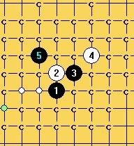

花月5打着两个6如何必胜求大师指点
首页
五子棋交流
#1 花月5打着两个6如何必胜求大师指点 作者：侯军学棋 发表时间：2011-5-16 21:00:07

#2 Re:花月5打着两个6如何必胜求大师指点 作者：五子痴 发表时间：2011-5-16 21:13:35
=======上图对应的爱五子棋谱代码如下，以便你拆解：========
h8h9i9j10g10f8g11i10g8g9h10f12h7
======================================================这个6的话 试试这路变化
#3 Re:花月5打着两个6如何必胜求大师指点 作者：五子痴 发表时间：2011-5-16 21:15:09
=======上图对应的爱五子棋谱代码如下，以便你拆解：========
h8h9i9j10g10f8g11i10g8g9h10j8h12
======================================================12反挡这么下
#4 Re:花月5打着两个6如何必胜求大师指点 作者：极地剑客 发表时间：2011-5-17 8:30:52
1左边这个6有意思,软件推荐7走3上.之后变化挺萎缩的,人脑推荐7走5左边看看.能不能必胜就不知道了,哇卡卡
#5 Re:花月5打着两个6如何必胜求大师指点 作者：侯军学棋 发表时间：2011-5-17 9:31:20
=======上图对应的爱五子棋谱代码如下，以便你拆解：========
h8h9i9j10g10f8g9f10i7g8f7j6h5g6i6i5h4h7g4
======================================================这个6在四哥的指导下已近完成必胜
=======上图对应的爱五子棋谱代码如下，以便你拆解：========
h8h9i9j10g10f8g9g8f10e11i10i11k8j6j9
======================================================